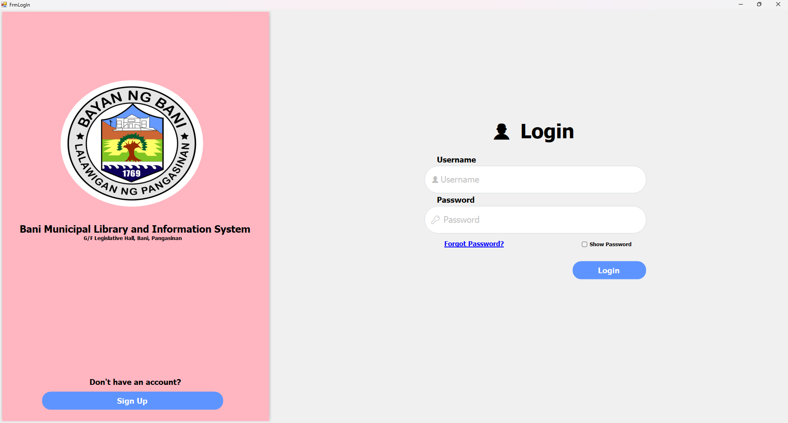
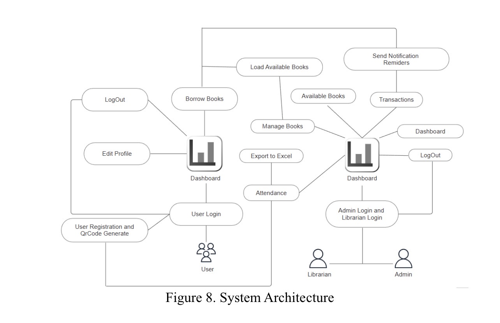
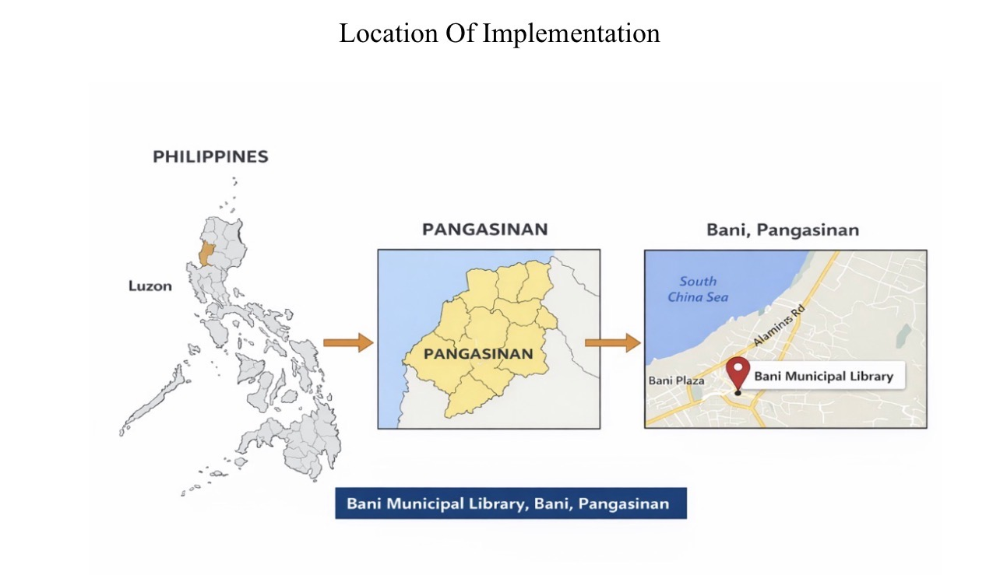

Hi! I'm Keshra Alleya Gonzales, I am an Information Technology student learning a web development.
I am an IT student who is learning about technology and programming. I enjoy discovering how computers and systems work and creating simple projects. My goal is to improve my skills and find a good job in the future. I want to build useful and user-friendly applications while continuing to learn new things.
I build webpage structures using HTML. I organize content clearly. I create headings, paragraphs, and lists. I structure forms and tables.
I style websites with CSS. I add colors, fonts, and spacing. I make layouts look neat and clean. I design responsive pages for all screens. I improve the visual appearance of websites.
I add interactivity with JavaScript. I create buttons, sliders, and menus. I make webpages dynamic and fun. I handle user actions smoothly. I bring websites to life with code.

The Bani Municipal Library and Information System is a digital solution designed to modernize library operations through automated client registration and transaction monitoring. New clients create accounts via a computer interface, enabling a scan-based system for quick entry, borrowing, and returning of books. A key feature of the system is the Automated SMS Notification, which sends text alerts to borrowers when their due dates are approaching or if they have overdue books. This setup allows librarians to efficiently track all real-time transactions and attendance records through a centralized digital dashboard.

The system architecture follows a dual-access design connecting the User and Admin/Librarian roles through a centralized dashboard. Users can register to generate a unique QR code, login, and manage their profiles or borrow books. On the administrative side, librarians and admins monitor attendance, manage the book inventory, and track all transactions. This integrated framework ensures that every action—from client entry to automated SMS reminders—is synchronized and recorded within a single, organized environment.

The project will be implemented at the Bani Municipal Library located in Bani, Pangasinan. Situated at the G/F Legislative Hall, this specific site serves as the localized hub for the system’s deployment. By focusing on this municipal library, the system provides a digital solution tailored to the community's needs, transforming its traditional operations into a modernized, automated information hub.